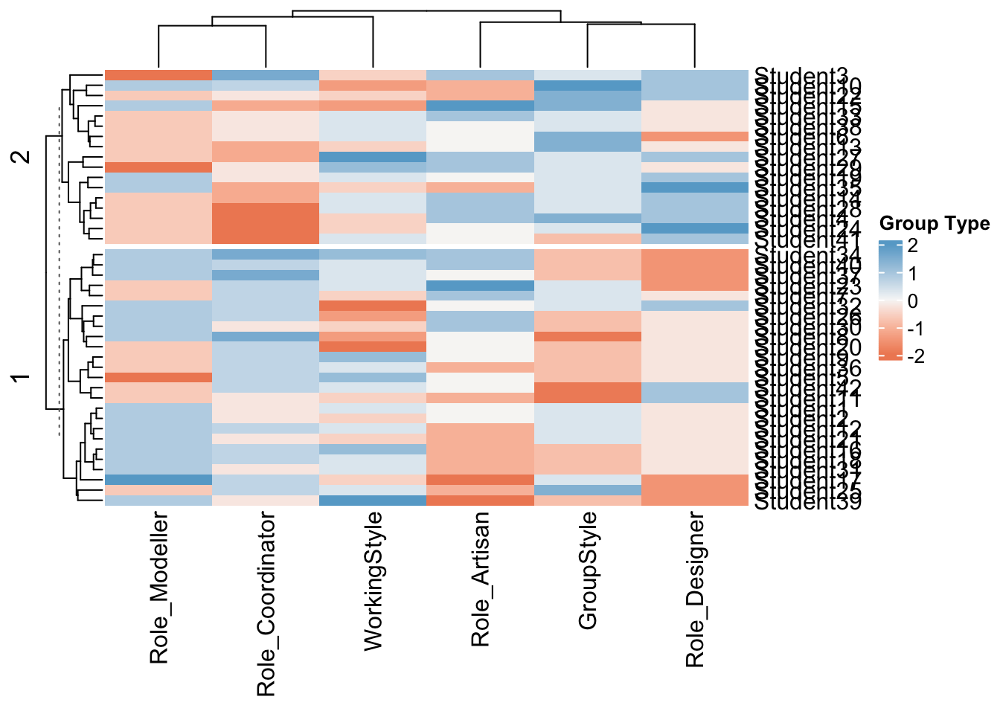
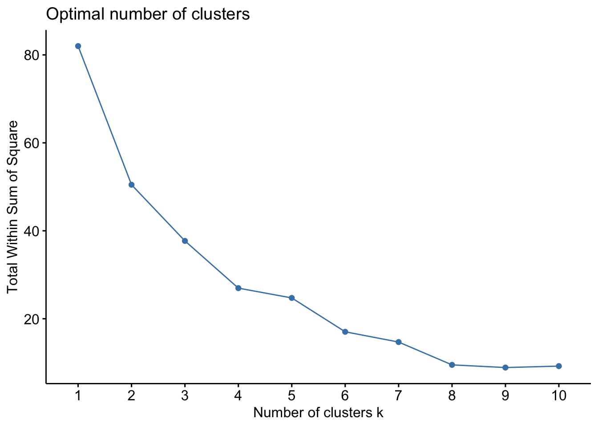

1. Making teams
The main point - READ THIS!
DO NOT TAKE THIS SERIOUSLY - EVERYONE CAN FIT INTO ALL OF THESE GROUPS.
None of this is part of our course. You do not have to reproduce it, learn it or do this in R. But it gets to the heart of regression… you are just imagining models and seeing how the data best fits.
I made this quiz in 10mins flat and the “model” was pretty hard to read. With that in mind, remember that those big sophisticated models that put us in groups on social media might be wrong too.. They’re just guesses based on the imperfect information we feed them.
I also wanted you to see how cool these interactive markdown documents are.
What is machine learning
As we have are exploring in class, there are several types of machine learning.
In supervised learning, we know the “answer”, or response values in our training data, so we then make a model using techniques such as regression to build a relationship between our response data and some predictor(s).
In unsupervised learning, we have no idea what the answer is. We are simply taking a load of data points, each with their own attributes, and letting a computer place them into “similar” clusters. Then when we get new data, we see which cluster it is part of.

Using unsupervised learning for personalities..
There is definitely no “right” answer when it comes to human personality. We change from day to day and people make millions from the ability to get humans to work together. I certainly know nothing about you all, but I do know that groups work best when there are people able to fill certain roles.
In the past when I have taught group projects, people have either split via friendship, alphabetical order or the people sitting around them, which tends to leave many groups unbalanced. I was interested to see if a basic personality quiz and unsupervised machine learning could do better.
The other reason I wanted to see this is that my model is a very, very simple version of what the social internet does. People often hear the myth that your phone “hears” what people say and shows you adverts. The likely reality is maybe even more disturbing.. that there are models so sophisticated that they can predict and market what you want before you realise you want it..
Setting up the study
The best models are very tailored to a specific end goal. My end goal was only to put you into effective working groups. So first of all, I thought about what roles might be useful and what types of teams tend to work well together.
I decided on these roles:
Role Artist/Writer | Someone who takes pride in making the output look professional, who cares about color palettes or working out the right words to explain the output.
Role Designer | Someone who cares about brainstorming, ideas and the big picture, who can make the links between the theory and the real life application.
Role Coder | Someone who loves the code and the maths, who’s not afraid to work through the tutorials and figure it out
Role Coordinator | Someone who excels at managing projects, keeping track of deadlines and building a team community
I also guessed that there are a few general attributes that make people feel at home in teams. So I made two sliding scales; ignore my imperfect jargon!
“Working Style” (Detail-oriented to Journey-Orientated).. | Detail orientated people were more likely to score highly on questions around being efficient or keeping to a plan. Journey orientated (journey before destination) people were more likely to score highly on questions around being easy going.
“Group Style”.. (Creative Chatty Group to Quieter Efficient Group)| These were questions around what type of group you said you preferred to work in.
So… in 10 minutes I made a very bad personality questionnaire where I tried to tailor my questions to these personality attributes (which I also dreamed up in 10 mins).
Data processing
Step 1. Coding the quiz
I could have probably put your raw data into a model, but to make life easier on myself, I decided to assign a tag to each question with a corresponding “score”. Some questions didn’t really fit in the end, so I tagged those “ignore” and I tried a load of combinations before ending up with the exact roles above.
You can see my codes here, attached to each question number & option.
# From the readxl package
Codes <- read_excel("Project1_PersonalityKey_Final.xlsx")
# This will print it nicely
Codes# A tibble: 71 × 9
Question Code AllGr…¹ Score Roles RoleS…² Style Style…³ Text
<chr> <chr> <chr> <dbl> <chr> <dbl> <chr> <dbl> <chr>
1 1_Location Adventure Ignore 0 Igno… 0 Igno… 0 Im e…
2 1_Location Arboretum Ignore 0 Igno… 0 Igno… 0 I ca…
3 1_Location CampusFocus Ignore 0 Igno… 0 Igno… 0 I do…
4 1_Location CarAccess Ignore 0 Igno… 0 Igno… 0 I ha…
5 1_Location Hiking Ignore 0 Igno… 0 Igno… 0 Love…
6 1_Location SkiAccess Ignore 0 Igno… 0 Igno… 0 I ca…
7 1_Location StateCollegeK… Ignore 0 Igno… 0 Igno… 0 I kn…
8 2_R_Competency Expert Role_M… 2 Role… 2 Igno… 0 Love…
9 2_R_Competency Intermediate Role_M… 1 Role… 1 Igno… 0 Ive …
10 2_R_Competency StartingOut Role_M… -1 Role… -2 Igno… 0 Ive …
# … with 61 more rows, and abbreviated variable names ¹AllGroups, ²RoleScore,
# ³StyleScoreStep 2. Quality Control
Because I didn’t spend time setting up Canvas in advance, I then needed to find a way to match each of your answers to their equivalent score. This took a few steps:
- I saved your Canvas answers as an excel spreadsheet.
- R hates special characters like ” ! , ’ etc, so I selected the entire sheet then used find/replace to remove anything that I could think of. I did the same to the questions in the coding sheet so they would match.
- I then read the data into R. One column for each question. The object of analysis is a student.
QuizData <- read_excel("Project 1_ CanvasAns_ReadyForR.xlsx")
# Showing the column names to keep the data more private and removing the second langauge data (column 14)
QuizData <- QuizData[-14]Now I wanted to automatically change the canvas answers to the codes I made and I wanted to be general enough that if I changed a code, it could be easy to just re-run. This is messy coding! There are many more efficient ways to do it, but… it gets the job done. The output of this code is three tables where each person’s answers/options are coded using my tags
# I'm now going to make three output datasets, one for just roles,
# one for just group style and one for both
Roles <- QuizData
Styles <- QuizData
## Read in coding dataset
CodingKey <- read_excel("Project1_PersonalityKey_Final.xlsx")
CodingKey$UniqueCode <- paste(CodingKey$Question, CodingKey$Code,sep="_")
## Work out the unique questions. I made sure these match the column name
Unique_Qu <- unique(CodingKey$Question)
# For every question, find the location in both datasets and replace
# I'm certain there is a one line answer to this involving the merge command
# but this worked easiest for my brain
# For each question
for(n in 1:length(Unique_Qu)){
# Find the column location for that question
col_location <- which(names(QuizData) == Unique_Qu[n])
# And get the unique question options from the Coding key
QuestionKey <- CodingKey[CodingKey$Question == Unique_Qu[n] ,]
# For every option
for(option in 1:nrow(QuestionKey)){
# For every person, because stringr was annoying
for(row in 1:nrow(QuizData)){
# Replace the question text with the tags
Roles[row,col_location] <- str_replace_all(Roles[row,col_location],
QuestionKey$Text[option],
QuestionKey$Roles[option])
Styles[row,col_location] <- str_replace_all(Styles[row,col_location],
QuestionKey$Text[option],
QuestionKey$Style[option])
}
}
}
#adjust the column names, R doesnt like them starting with a number and I am too lazy to go back
names(Roles) <- paste("Q",names(Roles),sep="")
names(Styles) <- paste("Q",names(Styles),sep="")OK, that’s great - now each of your options has the correct code.. BUT I also need to assign the scores! For example if you said you hated art, I don’t want you to rank highly as an artist. This code does that for the roles
# Get each person's identifier. CHANGE THIS HLG
RoleCodes <- Roles[,1:4]
# Make new blank columns for each CODE rather than question e.g. artist role
for(col in 1:length(unique(CodingKey$Roles))){
RoleCodes[,4+col] <- NA
names(RoleCodes)[4+col] <- unique(CodingKey$Roles)[col]
}
cols <- 5:ncol(Roles)
Roles$AllAns <- apply( Roles[ , cols ] , 1 , paste , collapse = "," )
# For each person and each Meta Code
for(p in 1:nrow(RoleCodes)){
#This splits all your answer tags into a frequency table
tmp <- data.frame(table(str_split(Roles$AllAns[p],",")[[1]]))
for(n in 1:nrow(tmp)){
newcol <- which(names(RoleCodes) %in% tmp[n,1])
RoleCodes[p,newcol] <- tmp[n,2]
}
}and the same for the working style.. I did say it was messy code!
# Get each person's identifier. CHANGE THIS HLG
StyleCodes <- Styles[,1:4]
# Make new blank columns for each CODE rather than question e.g. artist Style
for(col in 1:length(unique(CodingKey$Style))){
StyleCodes[,4+col] <- NA
names(StyleCodes)[4+col] <- unique(CodingKey$Style)[col]
}
cols <- 5:ncol(Styles)
Styles$AllAns <- apply( Styles[ , cols ] , 1 , paste , collapse = "," )
# For each person and each Meta Code
for(p in 1:nrow(StyleCodes)){
tmp <- data.frame(table(str_split(Styles$AllAns[p],",")[[1]]))
for(n in 1:nrow(tmp)){
newcol <- which(names(StyleCodes) %in% tmp[n,1])
StyleCodes[p,newcol] <- tmp[n,2]
}
}
# manually stick them together into one
CodedData <- cbind(RoleCodes[,c(1:4,6:9)],StyleCodes[,6:7])
# and replace any NA's with 0 (e.g. people didn't choose enough to give an opinion)
CodedData[is.na(CodedData)==TRUE] <- 0OK! Here are the results. You all shared your introduction posts with each other, but to preserve privacy I am displaying them as your email ID. For later plots, I will use anonymous tags.
REMEMBER, THIS IS JUST BASED ON MY BIASED INTERPRETATION OF QUICK QUESTIONS AND TAGGING. IT’S NOT “TRUTH”. For example, maybe there is some cultural or implicit bias in my questions or the way I phrased them so that some students interpreted them differently..
CodedData[,c(2,5:10)] QEMailID Role_Modeller Role_Artisan Role_Coordinator Role_Designer
1 pjd5319 3 3 3 2
2 zvl5464 3 3 3 2
3 ovm5126 1 4 5 3
4 djd6132 2 4 1 3
5 hks5418 1 3 4 2
6 dfc5439 2 3 3 1
7 kml6610 2 4 4 2
8 kzp5527 3 3 5 2
9 bmd5735 2 3 4 2
10 nbs5387 3 2 4 3
11 yqf5150 2 2 3 3
12 eky5058 3 2 4 2
13 rmc6084 2 3 2 2
14 amg6850 2 4 2 3
15 gkk5160 3 5 2 2
16 cjt5577 3 2 4 2
17 jvc6258 4 1 4 1
18 mfb6052 3 2 4 2
19 hml5431 3 3 3 3
20 jmz5672 2 3 4 2
21 jfh5948 3 2 3 2
22 rxy5109 2 2 3 3
23 sqe5219 2 5 4 1
24 srm5966 2 3 1 4
25 avs7076 2 2 4 1
26 xzz5374 3 4 4 2
27 gks5260 2 4 2 3
28 jxt5575 2 4 1 3
29 kpm5881 1 4 3 2
30 leo5097 3 4 3 2
31 mfc5873 3 2 3 2
32 wxg5137 3 3 4 3
33 esr5189 2 4 3 2
34 yzl9 3 4 5 1
35 gbs5322 3 2 2 4
36 dgm5281 2 2 4 2
37 erb5623 3 3 5 1
38 jfp5556 2 3 3 2
39 kzp35 3 1 3 1
40 ajp6715 3 4 4 1
41 nfl5163 2 3 1 3
42 mjl6543 2 3 4 3
GroupStyle WorkingStyle
1 3 3
2 3 2
3 3 2
4 4 2
5 2 4
6 4 3
7 3 2
8 1 1
9 2 4
10 5 1
11 1 2
12 3 3
13 4 2
14 3 3
15 4 1
16 2 4
17 3 2
18 2 3
19 3 3
20 2 0
21 3 2
22 4 2
23 3 3
24 3 2
25 4 3
26 2 1
27 3 6
28 3 3
29 3 4
30 2 2
31 2 3
32 3 0
33 3 3
34 2 4
35 3 2
36 2 3
37 2 3
38 3 3
39 2 5
40 2 3
41 2 3
42 1 3Exploratory Analysis
I admit, getting the data in order took longer than I expected, so i’m using a very simple unsupervised technique called k-means clustering.
I first wanted to assign people to a role
# and I'm going to rank the answers e.g. rather than using raw numbers I'm saying "most artist score" vs "least artist score"
ScaledData <- scale(CodedData[,c(5:10)])
row.names(ScaledData) <- CodedData[,4]
densityHeatmap(ScaledData)Finally results! We can see that for many of the role, people tend to categorise themselves in a binary way e.g. for Role_Modeller, you can clearly see the people who answered “Hate progamming vs Love Programming”. A few of the categories are less clear, for example artist/writer, which could reflect my questions or that really everyone is pretty creative..
Heatmap(ScaledData, name ="Group Type", col = colorRamp2(c(-2, 0, 2), brewer.pal(n=3, name="RdBu")),
km = 2, split = CodedData$GroupVibe)
This is also interesting, I split my data by group type (high values are more chatty/excited, low values are more reserved and less keen).
You can see that there are distinct clusters in some of the roles. For example people who scored highly on “designer” were more likely to also score highly on working in groups. Again this MIGHT be a true effect, or a result of my imperfect questions.
Modelling
Note, I should have really used a hierarchical set up, where “Role” had 4 sub groups, but it means rearranging the data and writing this is a lot more involved than I expected! So here’s my 2023 first draft attempt.
To make R studio cloud work, we need to be in groups of 4. So I want to do this in two steps.
- Step 1, Split you all hopefully into similar groups - Step 2, Look at roles within the groups.
Let’s start with the roles
# Just choose the role columns
StyleData <- scale(CodedData[,c(9:10)])
fviz_nbclust(StyleData, kmeans, method = "wss")
fviz_nbclust(StyleData, kmeans, method = "silhouette")This gives me a sense that there isn’t a huge data signal in an optimal number of clusters. There’s a slight elbow at 4 groups, but the sillouette plot isn’t convincing me. This is in part due to not much data. See this link for a nice interpretation or look up a fviz_nbclust tutorial.
fit <- kmeans(StyleData, centers = 4, nstart = 25)
fviz_cluster(fit, data = StyleData)print(fit)K-means clustering with 4 clusters of sizes 14, 15, 7, 6
Cluster means:
GroupStyle WorkingStyle
1 -0.7212536 0.92160183
2 0.3205572 -0.07212536
3 1.6027858 -0.52090538
4 -0.9883846 -1.36236793
Clustering vector:
[1] 2 2 2 3 1 3 2 4 1 3 4 2 3 2 3 1 2 1 2 4 2 3 2 2 3 4 1 2 1 4 1 4 2 1 2 1 1 2
[39] 1 1 1 1
Within cluster sum of squares by cluster:
[1] 11.373904 2.643421 3.911184 6.398757
(between_SS / total_SS = 70.3 %)
Available components:
[1] "cluster" "centers" "totss" "withinss" "tot.withinss"
[6] "betweenss" "size" "iter" "ifault" CodedData$GroupCode <- fit$clusterHeatmap(fit$centers, name ="Score",
col = colorRamp2(c(-2, 0, 2), brewer.pal(n=3, name="RdBu")),
km = 2)
OK, so the x axis shows the two variables we were sorting
“Working Style” (Detail-oriented to Journey-Orientated).. | Detail orientated people were more likely to score highly on questions around being efficient or keeping to a plan. Journey orientated (journey before destination) people were more likely to score highly on questions around being easy going.
“Group Style”.. (Creative Chatty Group to Quieter Efficient Group)| These were questions around what type of group you said you preferred to work in. For example, maybe English is your second langauge and working in groups is stressful. Or you’re simply someone who prefers to work alone.
And the y axis shows the four groups:
- GroupType 1 Detail orientated but quieter/solo work (5 people)
- GroupType 2 Happy either way (6 people)
- GroupType 3 Loves groups, more relaxed (14 people)
- GroupType 4 Relaxed but not so keen on group work (17 people)
Now lets look at the roles
# Just choose the role columns
RoleData <- scale(CodedData[,c(5:8)])
fviz_nbclust(RoleData, kmeans, method = "wss")fviz_nbclust(RoleData, kmeans, method = "silhouette")This gives me a sense that there isn’t a huge data signal in an optimal number of clusters but that maybe 8 clusters is optimal. See this link for a nice interpretation or look up a fviz_nbclust tutorial.
For now, I want to make my life easy so I can focus on actually teaching you all regression. I first split you into four groups using kmeans clustering.
fit <- kmeans(RoleData, centers = 4, nstart = 25)
fviz_cluster(fit, data = RoleData)print(fit)K-means clustering with 4 clusters of sizes 13, 7, 7, 15
Cluster means:
Role_Modeller Role_Artisan Role_Coordinator Role_Designer
1 0.9708376 -0.81336876 0.3197092 -0.14130685
2 -0.4278267 0.41513740 -1.6581811 1.36292740
3 0.6417401 1.14773282 0.5383705 -0.94812341
4 -0.9412188 -0.02441985 0.2454969 -0.07110926
Clustering vector:
[1] 1 1 4 2 4 4 4 1 4 1 4 1 4 2 3 1 1 1 1 4 1 4 3 2 4 3 2 2 4 3 1 1 4 3 2 4 3 4
[39] 1 3 2 4
Within cluster sum of squares by cluster:
[1] 20.481800 9.443628 13.191550 29.001332
(between_SS / total_SS = 56.0 %)
Available components:
[1] "cluster" "centers" "totss" "withinss" "tot.withinss"
[6] "betweenss" "size" "iter" "ifault" CodedData$RoleCode <- fit$clusterYou can more easily see the properties of the four clusters here:
- Group 1: Designer/Artists (7 people)
- Group 2: Coordinators (15 people)
- Group 3: Coordinator/Modellers (7 people)
- Group 4: Bit of everything, but loves art especially. less keen on brainstorming (13 people)
Heatmap(fit$centers, name ="Group Type",
col = colorRamp2(c(-2, 0, 2), brewer.pal(n=3, name="RdBu")),
km = 2)
And from this, because I’m on line 400 of code, I’m going use those results to then manually assign you to groups, where each group has a range of roles but you have similar group types.
I will take another attempt later in the semester to be more sophisticated about the modelling!
Here is the summary of the final two sets of classifications and you can use the keys above to interpret your own answers and whether it rings true or not.
CodedData[,c(2,5:12)] QEMailID Role_Modeller Role_Artisan Role_Coordinator Role_Designer
1 pjd5319 3 3 3 2
2 zvl5464 3 3 3 2
3 ovm5126 1 4 5 3
4 djd6132 2 4 1 3
5 hks5418 1 3 4 2
6 dfc5439 2 3 3 1
7 kml6610 2 4 4 2
8 kzp5527 3 3 5 2
9 bmd5735 2 3 4 2
10 nbs5387 3 2 4 3
11 yqf5150 2 2 3 3
12 eky5058 3 2 4 2
13 rmc6084 2 3 2 2
14 amg6850 2 4 2 3
15 gkk5160 3 5 2 2
16 cjt5577 3 2 4 2
17 jvc6258 4 1 4 1
18 mfb6052 3 2 4 2
19 hml5431 3 3 3 3
20 jmz5672 2 3 4 2
21 jfh5948 3 2 3 2
22 rxy5109 2 2 3 3
23 sqe5219 2 5 4 1
24 srm5966 2 3 1 4
25 avs7076 2 2 4 1
26 xzz5374 3 4 4 2
27 gks5260 2 4 2 3
28 jxt5575 2 4 1 3
29 kpm5881 1 4 3 2
30 leo5097 3 4 3 2
31 mfc5873 3 2 3 2
32 wxg5137 3 3 4 3
33 esr5189 2 4 3 2
34 yzl9 3 4 5 1
35 gbs5322 3 2 2 4
36 dgm5281 2 2 4 2
37 erb5623 3 3 5 1
38 jfp5556 2 3 3 2
39 kzp35 3 1 3 1
40 ajp6715 3 4 4 1
41 nfl5163 2 3 1 3
42 mjl6543 2 3 4 3
GroupStyle WorkingStyle GroupCode RoleCode
1 3 3 2 1
2 3 2 2 1
3 3 2 2 4
4 4 2 3 2
5 2 4 1 4
6 4 3 3 4
7 3 2 2 4
8 1 1 4 1
9 2 4 1 4
10 5 1 3 1
11 1 2 4 4
12 3 3 2 1
13 4 2 3 4
14 3 3 2 2
15 4 1 3 3
16 2 4 1 1
17 3 2 2 1
18 2 3 1 1
19 3 3 2 1
20 2 0 4 4
21 3 2 2 1
22 4 2 3 4
23 3 3 2 3
24 3 2 2 2
25 4 3 3 4
26 2 1 4 3
27 3 6 1 2
28 3 3 2 2
29 3 4 1 4
30 2 2 4 3
31 2 3 1 1
32 3 0 4 1
33 3 3 2 4
34 2 4 1 3
35 3 2 2 2
36 2 3 1 4
37 2 3 1 3
38 3 3 2 4
39 2 5 1 1
40 2 3 1 3
41 2 3 1 2
42 1 3 1 4